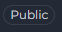

How to Use Public Agents and Pipelines from Chat¶
Introduction¶
While the Public Project has been removed from Elitea, public agents and pipelines remain fully accessible and usable within Elitea Chat. These community-shared resources provide pre-built workflows and specialized capabilities that you can leverage directly in your conversations without needing to create them from scratch.
This guide explains how to discover, access, and use these public entities from the Chat interface, as well as their permissions and limitations.
Overview¶
What Are Public Agents and Pipelines?¶
Public Agents:
- Pre-configured AI assistants designed for specific tasks
- Created by community members and approved by moderators
- Contain specialized instructions, model configurations, and integrated toolkits
- Examples: Data analysis agents, code review assistants, documentation generators
Public Pipelines:
- Multi-step automated workflows that orchestrate agents and tools
- Published by users after moderation approval
- Designed to handle complex, sequential tasks
- Examples: Test case generation workflows, user story review pipelines
Key Characteristics¶
- Community-Driven: Shared by other Elitea users after quality review
- Easily Identifiable: Marked with a "Public" chip/badge for quick recognition
- Read-Only Core Config: Core configuration cannot be modified (with temporary adjustments noted below)
- Immediately Usable: Add to conversations and start using right away
- Discoverable: Browse Latest, My Likes, and Trending sections
Accessing Public Entities from Chat¶
Public agents and pipelines are accessible directly within any conversation through the Chat interface.
Method 1: Using the # Search¶
The quickest way to find and add public entities is using the # symbol:
-
Open or Create a Conversation:
- Navigate to Chat in the main sidebar
- Click + Create for a new conversation, or open an existing one
-
Search for Public Entities:
- In the message input box, type
#followed by the name or keywords - A dropdown list appears showing matching agents and pipelines
- The list includes both your own entities and public community entities
- Public entities are marked with a "Public" chip/badge for easy identification
- In the message input box, type
-
Select the Entity:
- Click on the desired agent or pipeline from the dropdown
- The selected entity appears as a chip above the input box
-
Send Your Message:
- Type your message or question
- Click Send or press Enter
- The public item will process your request
{kind=link}
Method 2: Using the Participants Panel¶
You can also add public entities through the PARTICIPANTS panel on the right side:
-
Locate the Participants Panel:
- On the right side of the chat interface, find the PARTICIPANTS section
- You'll see collapsible sections for Agents and Pipelines
-
Add Public Entities:
- Click the + icon next to Agents or Pipelines
- A dropdown list appears with available entities, including public ones
- Public entities are marked with a "Public" chip/badge
- Select the public entity you want to add
-
Interact with the Entity:
- Click on the participant in the PARTICIPANTS list to activate it
- Type your message and send
{kind=link}
Using Public Agents and Pipelines¶
Using Public Agents¶
Step-by-Step:
-
Add the Public Agent:
- Use
#AgentNamein the input box, OR - Click + next to Agents in the PARTICIPANTS panel
- Use
-
Activate the Agent:
- Click on the agent name in the PARTICIPANTS list
- The active agent is highlighted in the list
-
Interact:
- Type your message or click a conversation starter if available
- Send your message
- The public agent processes your request and responds
Visual Indicators
- Public agents are marked with a "Public" chip/badge, making them easily identifiable. This badge appears on the agent card in lists and search results, helping you quickly distinguish between your private agents and community-shared public agents.

{kind=link}
Example: Using Business Analyst Agent
The Business Analyst agent helps create requirements documentation, diagrams, and analysis artifacts for your projects.
Scenario: You need user stories for an e-commerce shopping cart feature.
Step 1: Add the Agent
- Type
#Business Analystin the chat input box - The agent appears in PARTICIPANTS with a "Public" badge
{kind=link}
Step 2: Ask Your Question
Step 3: Agent Response
The agent provides a comprehensive guide on creating user stories, including:
Core Format:
Complete User Story Example:
| Title | Description | Acceptance Criteria | Priority | Story Points |
|---|---|---|---|---|
| Add item to cart | As a registered shopper, I want to add a product to my cart so that I can purchase later | See scenarios below | High | 3 |
Acceptance Criteria (Gherkin format):
Scenario: Add an in-stock item
Given I am a logged-in shopper
And product "ABC123" is in stock
When I click "Add to cart"
Then the item appears in my cart with quantity 1
And I see "Added to cart"
Scenario: Prevent adding out-of-stock item
Given product "XYZ999" is out of stock
When I click "Add to cart"
Then I see "Item out of stock"
And the cart is unchanged
Agent Also Provides:
- ✔️ Quality Checklist: INVEST criteria (Independent, Negotiable, Valuable, Estimable, Small, Testable)
- ✔️ Story Splitting Techniques: How to break down large stories
- ✔️ Non-Functional Requirements: Performance, security, accessibility considerations
- ✔️ Traceability: Links to business rules, test cases, and requirements
- ✔️ Alternative Formats: YAML, Jira markup, or Azure DevOps format
Step 4: Request Specific Format
The agent will regenerate the story in your preferred format with all necessary fields.
Benefits:
- ⚡ Fast: Get complete, well-structured user stories in seconds
- 📋 Standards-Based: Follows BABOK, IIBA, and Agile best practices
- 🔄 Adaptable: Works with Jira, Azure DevOps, Confluence, or plain Markdown
- 🎯 Complete: Includes acceptance criteria, NFRs, and traceability
Tip: Click ⚙️ next to the agent to adjust Temperature (lower = more structured output) for your current session.
{kind=link}
Using Public Pipelines¶
Step-by-Step:
-
Add the Public Pipeline:
- Type
#PipelineNamein the input box, OR - Click + next to Pipelines in the PARTICIPANTS panel
- Type
-
Activate the Pipeline:
- Click the pipeline in the PARTICIPANTS list
- Active pipeline is highlighted
-
Execute Workflow:
- Type your input or instruction
- Send your message
- The pipeline executes its multi-step workflow
- Monitor progress in the chat responses
Pipeline Configuration
Public pipelines are marked with a "Public" chip/badge for easy identification. You can view pipeline workflow and settings using the settings icon (⚙️). Public pipelines open with limited editing capabilities when you click settings—you cannot modify or save the workflow, but you can inspect it to understand how it works.
Differences Between Public and Private Entities¶
Functionality¶
| Aspect | Public Entities | Private Entities |
|---|---|---|
| Execution | ✔️ Fully functional | ✔️ Fully functional |
| Add to Chat | ✔️ Via # search or + button | ✔️ Via # search or + button |
| Temporary Model Changes | ✔️ Change LLM & settings (session only) | ✔️ Full control |
| Temporary Variables (Agents) | ✔️ Modify variables (session only) | ✔️ Full control |
| Save Changes | ✘ Cannot save any modifications | ✔️ Can save all changes |
| Edit Core Configuration | ✘ Prompts, workflows read-only | ✔️ Full edit access |
| --- |
Permissions and Limitations¶
What You Can Do¶
✔️ Execute Public Entities:
- Run public agents and pipelines in your conversations
- Use them as many times as needed
- Combine multiple public entities in one conversation
✔️ View and Temporarily Modify Configurations:
Public entities open with limited editing capabilities. You can view configurations and make temporary adjustments for your current conversation:
For Agents:
- Click the agent in PARTICIPANTS → Click ⚙️ settings icon
- Agent Canvas opens with read-only core configuration
- You CAN temporarily modify:
- LLM model selection
- Model settings (Temperature, Top P, Top K, etc.)
- Variables
- You CANNOT modify or save:
- Agent prompt/instructions
- Toolkit configurations
- Other core settings
- You CAN temporarily modify:
For Pipelines:
- Click the pipeline in PARTICIPANTS → Click ⚙️ settings icon
- Pipeline Canvas opens with read-only workflow
- You CAN temporarily modify:
- LLM model selection
- Model settings (Temperature, Top P, etc.)
- You CANNOT modify or save:
- Pipeline workflow or nodes
- Toolkit configurations
- Agent/pipeline integrations
- Other core settings
LLM and Settings Configuration
LLM model and settings selections become enabled only after selecting the pipeline as an active participant. Once the pipeline is active in the PARTICIPANTS list, you can then access and temporarily modify the LLM model and model settings for your current conversation session.
Session-Only Changes
All temporary modifications apply only to your current conversation. Starting a new conversation with the same public entity will revert to the original default configuration. This allows you to experiment without affecting the public version or other users.
✔️ Create Your Own Versions:
- While you cannot save modifications to public entities, you can create your own agent or pipeline
- Copy concepts and adapt them to your needs in your Private or Team projects
- Save customized versions permanently in your workspace hat-conversations
What You Cannot Do¶
✘ Save Modifications to Public Entities:
- Cannot save changes to model settings, variables, or credentials
- Temporary adjustments only last for the current conversation
- Each new conversation with the public entity starts with default configuration
✘ Delete or Unpublish:
- Only the original author and moderators can manage publication status
- Users cannot remove public entities from the community library
Important Notes¶
When Creating Your Own Versions:
- Learn from Public Entities: Study how successful entities are structured, understand prompt engineering techniques, and learn effective workflow patterns
- Adapt, Don't Copy Exactly: Create variations suited to your specific needs, combine concepts from multiple public entities, and add your own improvements
- Consider Publishing: If you create something valuable, consider publishing it back to the community to share your improvements and help others
Related Resources
- How to Use Chat Functionality - Complete guide to Chat features
- How to Create and Edit Agents from Canvas - Learn to create your own agents
- How to Create and Edit Pipelines from Canvas - Build custom pipelines
- Agents Menu Guide - Browse and manage agents
- Pipelines Menu Guide - Explore pipeline workflows
Summary¶
Public agents and pipelines provide immediate access to community-tested workflows and capabilities without the overhead of creating them yourself. While the Public Project interface has been removed, these resources remain accessible directly from Chat, where you can:
- ✔️ Search and add public entities using
#or the Participants panel - ✔️ Execute them freely in your conversations
- ✔️ Make temporary adjustments to model settings and variables for your session
- ✔️ View their core configurations (prompts, workflows) in read-only mode
- ✔️ Learn from them to create your own custom versions with saved modifications
By leveraging public entities effectively, you can accelerate your workflows, experiment with different configurations, learn best practices from the community, and focus on solving your unique problems rather than reinventing common solutions.